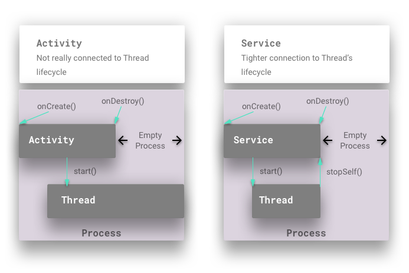

Created by gh-md-toc
Most sophisticated Android apps have to do something that requires background execution. This means in a background thread, and not the main thread (which is used for all UI updates).
If you create a Thread or an Executor in an Activity of your app, this leads to unpredictable results, since a simple screen orientation change will disrupt things, since the Activity will no longer be around when the Thread completes it's task.
You could use AsyncTask to handle this, but what if your app needs this background thread to be started from not just an Activity, but a notification or another component?
In these cases, Android Services are the right Android component to use to match up the Thread's lifecycle with that of the Service's lifecycle.
A Service is an Android application component without a UI that runs on the main (UI) thread.
It also has to be declared in the AndroidManifest.xml. If you want the service code to run
in a background thread, then you must manage that yourself. The terms background
and
foreground are overloaded.
In this article, we are going to use the terms background and foreground to refer to
the lifecycle of Android components. And when referring to Threads, we will use
background thread, and foreground thread explicitly.
There is a subclass of Service that handles it's own background thread called IntentService which we are not going to cover in this article.
Let's take a step back and look at a larger picture of what Services are meant to do. Your code that runs in a background thread, like a Java Thread or an Executor isn't really bound to any the lifecycle of any Android components. If you think about an Activity, it has a discrete starting and ending point, based on user interaction. However, these starting and ending points don't necessarily connect with a Thread's lifecycle.

The following are high level points to note in this diagram. The details for all of these points (and clarifications to them) are going to be provided in the rest of the article.
There are 2 kinds of services - Started Services, and Bound Services. And a Service can be both at the same time. We will now cover the behaviors of 3 types of services:
A lot has changed with background Services in Android O. One of the main differences is that a Started Service that does not have a persistent notification won't be allowed to run in the background when the Activity goes away. In other words, you must have a persistent notification that you attach the Started Service to. And you also start Started Services with a different method - startForegroundService(). And you have 5 seconds in order to move this Started Service to the foreground and attach a persistent notification to it, otherwise you will get an ANR. All of this will be explained below with examples.
A Started Service can be started by calling the startService(Intent) method in your Activity or Service. This Intent has to be an explicit Intent, which means that you either make a reference to the Service's class, or you include the package name of your app in the Intent. Here's some code to create an explicit Intent.
public class MyIntentBuilder{
public static MyIntentBuilder getInstance(Context context) {
return new MyIntentBuilder(context);
}
public MyIntentBuilder(Context context) {
this.mContext = context;
}
public MyIntentBuilder setMessage(String message) {
this.mMessage = message;
return this;
}
public MyIntentBuilder setCommand(@Command int command) {
this.mCommandId = command;
return this;
}
public Intent build() {
Assert.assertNotNull("Context can not be null!", mContext);
Intent intent = new Intent(mContext, MyTileService.class);
if (mCommandId != Command.INVALID) {
intent.putExtra(KEY_COMMAND, mCommandId);
}
if (mMessage != null) {
intent.putExtra(KEY_MESSAGE, mMessage);
}
return intent;
}
}
In order to move a Service to the Started state, you must call startService() with an explicit Intent. If you don't do this, then the service will not be in a Started State. If the Service isn't in a Started State, then it can't be moved into the foreground, and stopSelf() won't really do anything.
So if you've not put the Service in the Started State, then you won't be able to attach a persistent notification to it either. These are all important things to keep in mind when you think about letting the Service know when it should put itself in the Started State.
A Service can be started multiple times. Each time it is started, then onStartCommand() is called. A few parameters are passed to this command, along with any extras that are passed from your explicit Intent. Even if you start a Service multiple times, it will only call onCreate() once (unless of course this Service has already been bound to). In order to kill this Service, you have to ask it to stop by calling stopSelf(). When the Service does stop (after you've asked it) and there's nothing else bound to it, then it will call onDestroy(). Keep this in mind when allocating resources for your Started Service.
A Started Service is launched with an Intent. And the component that launches the Service doesn't really keep a connection to it, and if it needs to communicate something to the Started Service then it can start it again and pass it a different Intent. This is one of the main differences between Started and Bound Services. Bound Services on the other hand follow a client-server pattern. Where the client (Android UI component or another Service) retains a stub (or binder) that it can use to call methods directly on the Service (in this case the server).
public class MyActivity extends Activity{
@TargetApi(Build.VERSION_CODES.O)
private void moveToStartedState() {
Intent intent = new MyIntentBuilder(this).setCommand(Command.START).build();
if (isPreAndroidO()) {
Log.d(TAG, "moveToStartedState: Running on Android N or lower - startService(intent)");
startService(intent);
} else {
Log.d(TAG, "moveToStartedState: Running on Android O - startForegroundService(intent)");
startForegroundService(intent);
}
}
}
Keep in mind that things have changed regarding Started Services in Android O. They are no longer allowed to run in the background without having a persistent notification. And the method to start a background Started Service in O, is startForegroundService(Intent).
Started Services can run in the foreground. Again, the term foreground doesn't apply
to whether
the Service is running on the main Thread or a background Thread. It means that the Android
system will give this service highest priority and will try not to destroy it when t is running
low on system resources. You should only put a Started Service in the foreground if
it
is critical to do this in order to deliver a compelling user experience.
Sample use cases are:
When a Started Service moves into the foreground, it must display a persistent notification, explicitly notifying the user that the service is running. This is important because a Started Service in the foreground is detached from the lifecycle of UI components (with the exception of the persistent notification). And there's no way to let the user know that something is running on their phone without displaying any UI. And potentially consuming lots of resources on their phone.
Here's an example of running an already Started Service in the foreground.
public class MyActivity extends Activity{
private void commandStart() {
if (!mServiceIsStarted) {
moveToStartedState();
return;
}
if (mExecutor == null) {
// Start Executor task in background Thread.
}
}
}
Here's the code to display the persistent notifications before Android O.
@TargetApi(25)
public static class PreO {
public static void createNotification(Service context) {
// Create Pending Intents.
PendingIntent piLaunchMainActivity = getLaunchActivityPI(context);
PendingIntent piStopService = getStopServicePI(context);
// Action to stop the service.
NotificationCompat.Action stopAction =
new NotificationCompat.Action.Builder(
STOP_ACTION_ICON,
getNotificationStopActionText(context),
piStopService)
.build();
// Create a notification.
Notification mNotification =
new NotificationCompat.Builder(context)
.setContentTitle(getNotificationTitle(context))
.setContentText(getNotificationContent(context))
.setSmallIcon(SMALL_ICON)
.setContentIntent(piLaunchMainActivity)
.addAction(stopAction)
.setStyle(new NotificationCompat.BigTextStyle())
.build();
context.startForeground(ONGOING_NOTIFICATION_ID, mNotification);
}
}
Here's the code to display the persistent notifications on Android O (using Notification channels).
@TargetApi(26)
public static class O {
public static final String CHANNEL_ID = String.valueOf(getRandomNumber());
public static void createNotification(Service context) {
String channelId = createChannel(context);
Notification notification = buildNotification(context, channelId);
context.startForeground(ONGOING_NOTIFICATION_ID, notification);
}
private static Notification buildNotification(Service context, String channelId) {
// Create Pending Intents.
PendingIntent piLaunchMainActivity = getLaunchActivityPI(context);
PendingIntent piStopService = getStopServicePI(context);
// Action to stop the service.
Notification.Action stopAction =
new Notification.Action.Builder(
STOP_ACTION_ICON,
getNotificationStopActionText(context),
piStopService)
.build();
// Create a notification.
return new Notification.Builder(context, channelId)
.setContentTitle(getNotificationTitle(context))
.setContentText(getNotificationContent(context))
.setSmallIcon(SMALL_ICON)
.setContentIntent(piLaunchMainActivity)
.setActions(stopAction)
.setStyle(new Notification.BigTextStyle())
.build();
}
@NonNull
private static String createChannel(Service context) {
// Create a channel.
NotificationManager notificationManager =
(NotificationManager) context.getSystemService(Context.NOTIFICATION_SERVICE);
CharSequence channelName = "Playback channel";
int importance = NotificationManager.IMPORTANCE_DEFAULT;
NotificationChannel notificationChannel =
new NotificationChannel(CHANNEL_ID, channelName, importance);
notificationManager.createNotificationChannel(notificationChannel);
return CHANNEL_ID;
}
}
Note that the PendingIntent piStopService (that is passed to the
mNotification) would
actually pass an Intent with the Command.STOP integer. Remember that startService(Intent)
can be called multiple times? This is an example of that. In order to STOP the service,
we are firing an Intent on it via startService(Intent) that will be handled in the
onStartCommand() method of the Started Service.
public class HandleNotifications{
private static PendingIntent getStopServicePI(Service context) {
PendingIntent piStopService;
{
Intent iStopService = new MyIntentBuilder(context).setCommand(Command.STOP).build();
piStopService = PendingIntent.getService(context, getRandomNumber(), iStopService, 0);
}
return piStopService;
}
}
This is why the onStartCommand() of the Started Service needs to be able to handle Intents that might cause the service to stop itself. Here's some code to illustrate this.
public class MyService extends Service{
@Override
public int onStartCommand(Intent intent, int flags, int startId) {
boolean containsCommand = MyIntentBuilder.containsCommand(intent);
d(
TAG,
String.format(
"onStartCommand: Service in [%s] state. commandId: [%d]. startId: [%d]",
mServiceIsStarted ? "STARTED" : "NOT STARTED",
containsCommand ? MyIntentBuilder.getCommand(intent) : "N/A",
startId));
mServiceIsStarted = true;
routeIntentToCommand(intent);
return START_NOT_STICKY;
}
private void routeIntentToCommand(Intent intent) {
if (intent != null) {
// process command
if (containsCommand(intent)) {
processCommand(MyIntentBuilder.getCommand(intent));
}
// process message
if (MyIntentBuilder.containsMessage(intent)) {
processMessage(MyIntentBuilder.getMessage(intent));
}
}
}
}
When you want to take your Started Service out of foreground execution, you can call stopForeground(true). This will also take away the persistent notification. However, this will not stop the service. In order to do that you still have to call stopSelf().
To stop a service, you can do any of the following:
Here's some code samples for stopping a Started Service from an Activity.
public class MyActivity extends Activity{
void stopService1(){
stopService(new MyIntentBuilder(this).build());
}
void stopService2(){
startService(new MyIntentBuilder(this).setCommand(Command.STOP).build());
}
}
And here's the code in your Started Service that would respond to these (assuming that your Started Service has been moved to the foreground).
public class MyService extends Service{
private void stopCommand(){
stopForeground(true);
stopSelf();
}
}
Unlike Started Services, Bound Services allow a connection to be established between the Android component binding to the Service, and the Service. This connection is an IBinder which allows methods to be called on the Service. The simplest example of this is a Bound Service that has a client in a local process. In this case a Java object (an Binder subclass) is exposed to the client which can be used to access public methods on the Service.
In more complex scenarios where the Bound Service might be executing in a different process from the client, a Message handler or AIDL stub would have to be created. However, for local processes, it's really straightforward.
Here are a list of differences between Bound Services and Started Services.
In either case, if the Service (Bound or Started) needs to send messages to the bound client or whatever component started a Service, it has to use something like LocalBroadcastManager when the the client and Service are local to one process. Bound Services don't typically connect directly to a bound client component.
In order for a client component (Activity, Fragement, another Service) to bind to a Bound Service, bindService() must be called, with an explicit Intent just like with Started Services.
Here's a code example.
public class MyActivity extends Activity{
void bind(){
bindService(
new MyIntentBuilder(this).build(),
mServiceConnection,
BIND_AUTO_CREATE);
}
}
BIND_AUTO_CREATE is a very common flag to pass to the bindService() method. There
are
other flags that you can pass. What auto create does is that it calls onCreate() on
the Bound Service if that hasn't happened yet, at the time bindService() is called. This
essentially automatically creates the Bound Service upon the first client connecting to it.
Once bindService() is called, the service needs a way to react out to the client, and
give it the IBinder object which it can then use to call methods on the BoundService.
This happens in the code above via the mServiceConnection reference. This is a
ServiceConnection callback which the Bound Service will use to notify the client
about the completion of the binding process. It will let the client know as well if
the Bound Service has disconnected.
Here's an example of a ServiceConnection implementation.
public class MyActivity extends Activity{
private ServiceConnection mServiceConnection = new ServiceConnection(){
public void onServiceConnected(ComponentName cName, IBinder service){
My.MyBinder binder = (MyService.MyBinder) service;
mService = binder.getService(); // Get a reference to the Bound Service object.
mServiceBound = true;
}
public void onServiceDisconnected(ComponentName cName){
mServiceBound= false;
}
};
}
Let's look at what happens on the Bound Service side, when a client calls bindService(Intent).
In the Bound Service you have to implement the onBind() method. This gets called only once, when the very first client component connects to this Bound Service.
Here's an example of this.
public class MyService extends Service{
public IBinder onBind(Intent intent){
if (mBinder == null){
mBinder = new MyBinder();
}
return mBinder;
}
}
The Bound Service creates a mBinder object of type IBinder. So what is this IBinder?
Binder is an Android base class that allows a remotable object to be created. It implements a lightweight RPC mechanism for high performance in-process and cross-process calls (between clients and Bound Services).
Here's an example.
public class MyService extends Service{
public class MyBinder extends javax.xml.bind.Binder {
MyService getService(){
return MyService.this; // Simply return a reference to this instance of the Service.
}
}
}
In the example above, we simply expose a method called getService() which exposes
the Java object for the Bound Service to the client component. With a reference to this
IBinder, the client can call public methods directly on the Bound Service object. Note
that these methods will execute on the thread of the client component that is calling
these methods. In the case of an Activity or Fragment, these methods will run on the main
thread, so be careful of calling blocking methods on the Bound Service and causing ANRs
in your app.
In order to unBind() from a Bound Service, a calling simply calls
unBindService(mServiceConnection). The system will then call onUnbind() on the
Bound Service itself. If there are no more bound clients, then the system will call
onDestroy() on the Bound Service, unless it is in the Started State. If the Service
is not in a Started State, then onDestroy() gets called immediately, and the Bound
Service will be killed.
Here's what a client component's call to unbindService() looks like.
public class MyActivity extends Activity{
protected void onStop(){
if (mServiceBound){
unbindService(mServiceConnection);
mServiceBound = false;
}
}
}
In the code above, the Activity's onStop() method is overridden to call unbindService(). Depending on the UX requirements for your app, your client components can bind and unbind to a Bound Service in onStart() and onStop(), or whatever other Android Activity or Fragment of Service lifecycle methods you choose to hook into.
Here's an example of what onUnbind() looks like (in the Bound Service).
public class MyService extends Service{
public boolean onUnbind(Intent i){
return false;
}
}
Typically, you will return false. If you don't, then when the next client binds to
the
Bound Service, then onRebind() will be called, instead of onBind().
There are many use cases for your app that will require a service to be both Bound and Started. In the sections above, lots of detail have already been provided that highlight the implications to services being both. They usually involve the creation and destruction hooks for a Service.
A Service that is both Bound and Started can have methods inside of that can be called by bound client components. Since a Service doesn't have to be started for a client to bind to it, this is something that you must be aware of. This means that a client binding to a Service will call onCreate(). If you don't move your Service to a Started State, then when the client unbinds from the Service, it will be killed and it's onDestroy() method will be called.
This is what happens with a UI component will bind to the Service and create it. Then at some point the UI unbinds from the Service, and if it's in the middle of performing some long running task, then it's onDestroy() will be created and it will be killed. If your app requirements are that the Bound Service should continue running past the end of the UI component's lifecycle, then you have to start it, move it to the foreground, and have it show a persistent notification. This will ensure that the Bound and Started Service will keep running as long as it has to, or until the user decides to kill it by firing the PendingIntent to stop the Service (as shown in the examples above).
Since a client binding to a Service will not move it to the Started State, for Bound and Started services, it is safe to have the Service move itself into the Started State just in case.
public class MyService extends Service{
private void commandStart() {
if (!mServiceIsStarted) {
moveToStartedState();
return;
}
if (mExecutor == null) {
mTimeRunning_sec = 0;
if (isPreAndroidO()) {
HandleNotifications.PreO.createNotification(this);
} else {
HandleNotifications.O.createNotification(this);
}
mExecutor = Executors.newSingleThreadScheduledExecutor();
Runnable runnable =
new Runnable() {
@Override
public void run() {
recurringTask();
}
};
mExecutor.scheduleWithFixedDelay(runnable, DELAY_INITIAL, DELAY_RECURRING, DELAY_UNIT);
d(TAG, "commandStart: starting executor");
} else {
d(TAG, "commandStart: do nothing");
}
}
@TargetApi(Build.VERSION_CODES.O)
private void moveToStartedState() {
Intent intent = new MyIntentBuilder(this).setCommand(Command.START).build();
if (isPreAndroidO()) {
Log.d(TAG, "moveToStartedState: Running on Android N or lower - startService(intent)");
startService(intent);
} else {
Log.d(TAG, "moveToStartedState: Running on Android O - startForegroundService(intent)");
startForegroundService(intent);
}
}
@Override
public int onStartCommand(Intent intent, int flags, int startId) {
boolean containsCommand = MyIntentBuilder.containsCommand(intent);
d(
TAG,
String.format(
"onStartCommand: Service in [%s] state. commandId: [%d]. startId: [%d]",
mServiceIsStarted ? "STARTED" : "NOT STARTED",
containsCommand ? MyIntentBuilder.getCommand(intent) : "N/A",
startId));
mServiceIsStarted = true;
routeIntentToCommand(intent);
return START_NOT_STICKY;
}
}
In the example above:
commandStart() can be called by a client that binds to the Service.Regardless, what the example shows is the Service putting itself in the Started State first, before actually creating the Executor.
Let's say that commandStart() is called, after a client component binds to the
Service.
The Service hasn't been started yet.
Let's walk thru this code.
commandStart() again!
commandStart() mServiceIsStarted is set to
true and this
will actually do the work of commandStart() which is to create the Executor.
When a client component unbinds from your Service, if it is NOT in the Started State then it will be killed and onDestroy() will be called.
However, if it is in the Started State, then it will not be killed. It will only be killed if the Started Service is stoppd (either by calling StopService(Intent) or by calling startService(Intent with Extras and Command.STOP)).
You can see examples of most of the things outlined in this article in the source code for the Awake app. Here are some links: